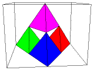
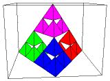

| The shape can be decomposed into N = 4 pieces, each scaled by a factor of
r = 1/2, so ds = Log(4)/Log(2) = 2.
This calculation suggests a bad joke. |
| Though hardly a surprise after the interesting variation
of example (e), this shows 2-dimensional shapes need not be smooth surfaces.
This shape is called the Sierpinski tetrahedron |
.
|
| Plane projections of complicated shapes in three dimensions can
be difficult to parse. To help with this, here are the three stages leading to the
decomposition on the right. |
|  |
|  |
|  |
|
| Finally, here are some photos of a
lab exercise to build a model Sierpinski
tetrahedron from envelopes. |